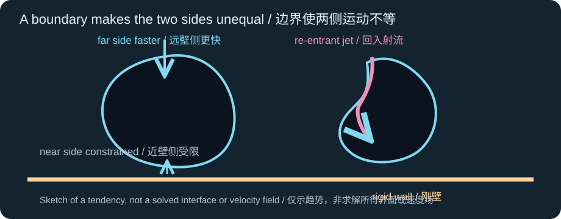
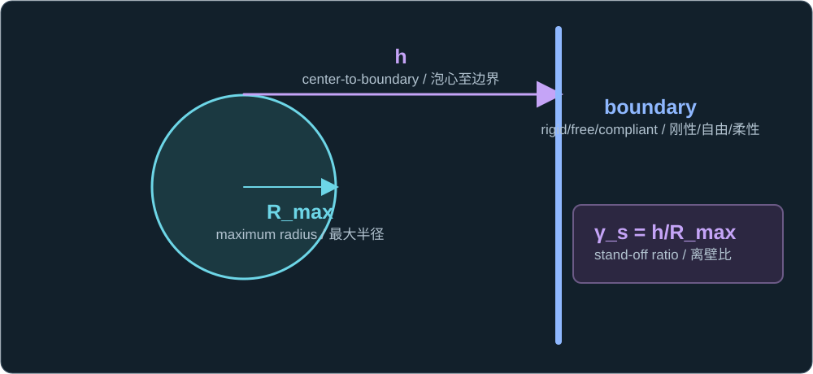
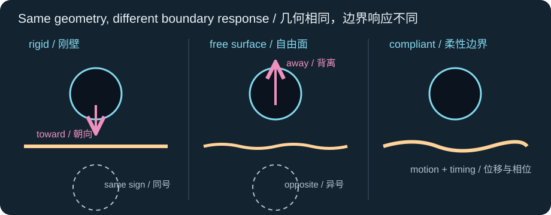
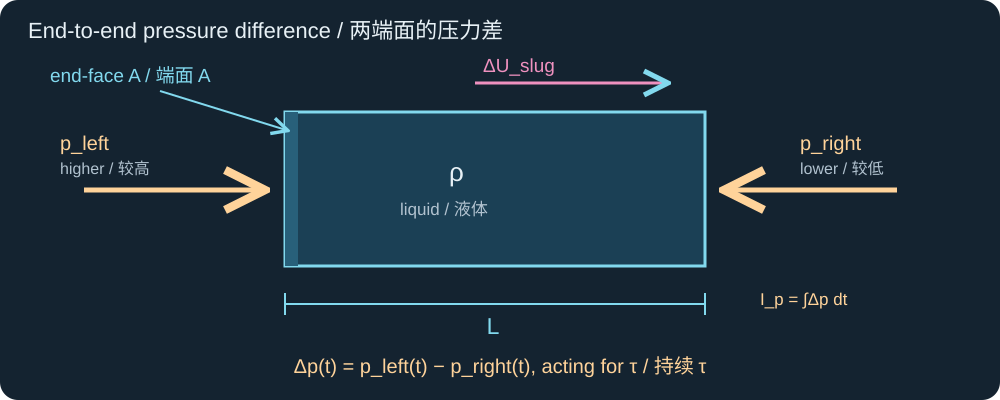
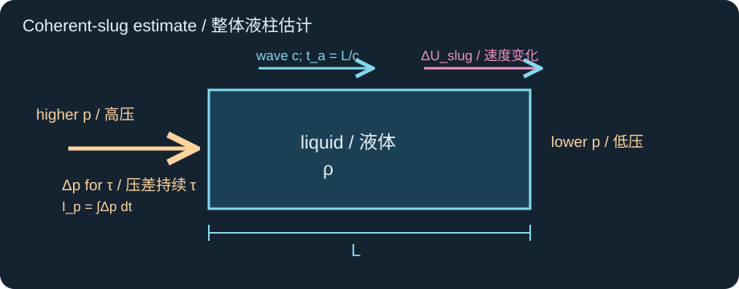
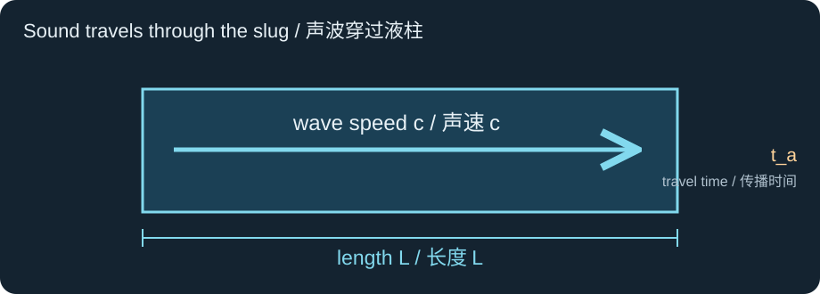
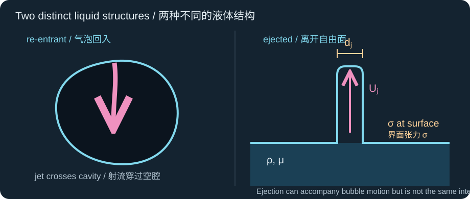
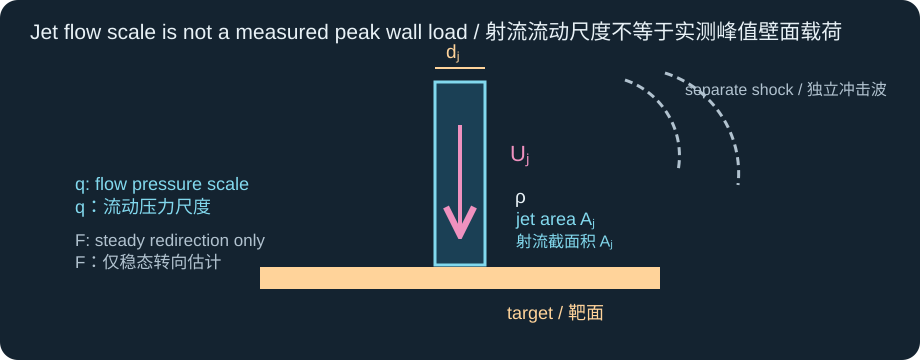
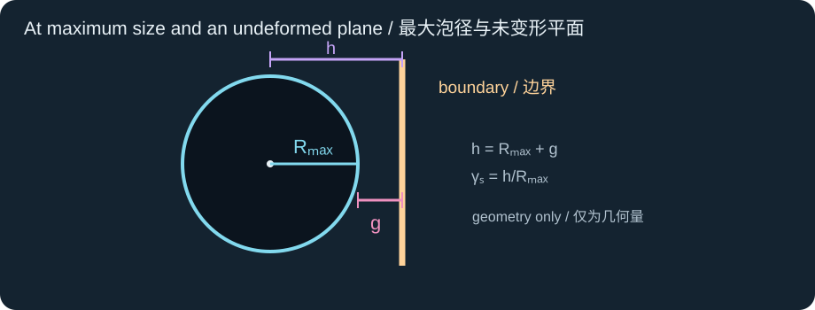

Historical lesson/review. Use the complete textbook course for the current study order. Former Chapters 4 and 5 are now Appendixes A and B.
历史课程／复习材料。当前学习顺序请使用完整教材课程。原第四、五章现为附录 A、B。
A radius-only model describes how a spherical boundary moves. A jet requires the interface shape and surrounding flow. Keep three speeds separate throughout this chapter: the bubble-wall speed Ṙ, the speed change of an idealized liquid slug ΔUslug, and the speed of an observed ejected jet Uj. The numerical problem labels each stage explicitly. Expand the reference answer directly below each question, then send a brief explanation in your own words.
单一半径模型描述球形界面的运动；射流还要求描述界面形状和周围流场。本章始终区分三种速度：泡壁速度 Ṙ、理想液柱的速度变化 ΔUslug，以及实测喷出射流速度 Uj。数值题明确标示各阶段。请展开每小题正下方的参考答案自行核对，再用自己的话给出简短解释。
Unequal interface motion makes a re-entrant jet
界面运动不等形成回入射流
Near a rigid plane, the bubble's far side can move inward differently from its wall-facing side. An indentation develops, concentrates liquid motion, and may pierce the cavity as a re-entrant bubble jet. The bubble may then become toroidal. A radial Rayleigh–Plesset solution has no top-versus-bottom shape variable, so a good fit to equivalent radius does not establish the jet's trajectory.
靠近刚性平面时，气泡的远壁侧与朝壁侧可能以不同速度向内运动。界面随之凹陷、液体运动聚集，并可能穿过空腔形成气泡回入射流；气泡之后可能变成环形。径向 Rayleigh–Plesset 解没有区分上下界面的形状变量，因此等效半径拟合良好，并不能证明射流轨迹已被预测。

The arrows describe a common rigid-wall tendency, not a solved velocity field.
箭头表示常见的刚壁趋势，并非已求解的速度场。
Sources: supplied book, Chapter 8; Brennen, §3.5.
Stand-off is geometry; response decides more
离壁比描述几何；响应还取决于边界
The stand-off ratio uses center-to-undeformed-boundary distance h and maximum radius Rmax. Equal stand-off does not mean equal jets. In ideal potential flow, a rigid no-penetration plane has a same-sign image bubble and commonly biases the re-entrant jet toward the wall. An ideal pressure-release free surface has an opposite-sign image and commonly biases the re-entrant bubble jet away from that surface. A flexible film can move, store energy, and reverse or complicate the bias; its mechanical response must be measured or modeled.
离壁比采用泡心到未变形边界的距离 h 以及最大半径 Rmax。离壁比相同并不意味着射流相同。在理想势流中，刚性不可穿透平面对应同号镜像气泡，通常使回入射流朝向壁面；理想压力释放自由面对应异号镜像，通常使气泡回入射流背离该表面。柔性薄膜会移动、储能，并可能使这一偏置反向或更复杂，因此必须测量或建模其力学响应。
γs = h/Rmax

Record h in the bounded experiment and identify the boundary type.
应记录实际有界实验中的 h，并辨明边界类型。

The image construction gives limiting direction intuition. Gravity, background flow, curvature, confinement, and boundary motion can alter the outcome. The directional momentum idea is often organized through Kelvin impulse; it is distinct from the scalar pressure impulse in the next mini-lesson.
镜像构造仅提供极限条件下的方向直觉。重力、背景流、曲率、约束和边界运动都可能改变结果。方向性动量常用Kelvin 冲量组织；它不同于下一节的标量压力冲量。
Sources: Blake et al., Kelvin impulse and boundaries; Brennen, §3.5.
Integrate pressure over time, then name the accelerated mass
先对压力随时间积分，再明确被加速的质量
Imagine a liquid slug of cross-sectional area A, length L, and density ρ. Let the pressure at its left face exceed that at its right face by Δp(t). The pressure difference between the faces drives the slug; pressure with the same value everywhere would exert no net force. The end-face force is AΔp(t), while the assumed coherently moving mass is ρAL. Integrate force over the pulse duration τ to obtain the momentum change:
设想截面积为 A、长度为 L、密度为 ρ 的液柱。设左端面压力比右端面高 Δp(t)。驱动液柱的是两端面之间的压差；若各处压力值完全相同，合力便为零。端面合力为 AΔp(t)，假定整体同步运动的液柱质量为 ρAL。将力在脉冲持续时间 τ 内积分，即得到动量变化：
ρAL ΔUslug ≈ A∫0τΔp(t)dt

The area appears in both force and mass and therefore cancels.
截面积同时出现在力与质量中，因此最终相消。
Keep the next three quantities separate. Pressure impulse is an end-to-end pressure difference integrated over time; for a nearly constant pulse, it is pressure difference times duration. Its unit is Pa·s.
请区分以下三个物理量。压力冲量是两端压差对时间的积分；若脉冲压差近似恒定，它等于压差乘持续时间，单位为 Pa·s。
Ip = ∫0τΔp(t)dt ≈ Δp τ [Pa·s]

Pressure impulse belongs to the pressure pulse, not to acoustic travel time.
压力冲量属于压力脉冲，与声传播时间是不同的物理量。
Divide that pressure impulse by the slug's mass per unit area, ρL, to obtain the coherent-slug speed change. Its unit is m/s.
用压力冲量除以液柱的单位面积质量 ρL，得到整体液柱的速度变化，单位为 m/s。
ΔUslug ≈ Ip/(ρL) [m/s]
Area cancels from the force impulse and slug mass.
截面积在力的冲量与液柱质量中相消。
A separate time scale asks how long a sound disturbance needs to cross length L at sound speed c. This is the acoustic crossing time; its unit is seconds. It is not a pressure impulse.
另一个时间尺度表示声学扰动以声速 c 穿过长度 L 所需的时间。这是声传播时间，单位为秒，并非压力冲量。
ta = L/c [s]

Compare ta with pulse duration τ before assuming the whole slug responds coherently.
假定整段液柱同步响应之前，应将 ta 与脉冲时长 τ 比较。
If τ is comparable to or shorter than ta, the whole slug need not acquire one common speed. A pulse lasting several crossing times makes a coherent response more plausible, but the time ratio alone gives no error bound. Even when the end-face impulse determines the total momentum of an isolated slug, a nonuniform internal velocity field would make ΔUslug a center-of-mass change rather than a local jet speed. Reflected pressure waves, lateral flow, and a changing bubble interface can still affect local motion.
若 τ 与 ta 相当或更短，整段液柱未必获得同一个速度。脉冲持续多个声传播时间时，整体同步响应更有可能成立，但仅凭时间比不能给出误差界限。即使已知两端面的冲量足以决定孤立液柱的总动量，内部速度不均匀时，ΔUslug 也只是质心速度的变化，而非局部射流速度。反射压力波、侧向流动及不断变化的气泡界面仍会影响局部运动。
Sources: supplied book, Sections 9.2–9.3 and Problem 16.16; Journal of Fluid Mechanics study of acoustic waves and jet focusing.
Inside a bubble versus leaving a liquid surface
穿入气泡与离开液面
The re-entrant jet crosses the collapsing bubble cavity. An ejected liquid jet leaves a free surface or donor layer and may fragment into droplets. These interfaces can move in different directions in one event. A free-surface experiment can produce both an outward splash or ejected jet and a distinct jet into the liquid. Never transfer the image-method direction of the bubble's re-entrant jet directly to the emitted liquid jet. For an observed emitted jet with speed Uj and diameter dj, Weber and Ohnesorge numbers identify inertia, capillary, and viscous scales, but do not by themselves guarantee breakup or transfer.
回入射流穿过塌缩中的气泡空腔；喷出液体射流离开自由面或供体液层，之后可能断裂为液滴。同一次事件中的这两种界面甚至可能朝不同方向运动。自由面实验可以同时产生向外的飞溅或喷出射流，以及进入液体内部的另一股射流。不能把镜像法给出的气泡回入射流方向直接套用到喷出液体射流。对于已观测到、速度为 Uj、直径为 dj 的喷出射流，Weber 数与 Ohnesorge 数标示惯性、毛细和黏性尺度，但它们本身不能保证断裂或转移。
Wej = ρUj²dj/σ
Ohj = μ/√(ρσdj)

Here dj is diameter, not radius; keep that convention when comparing Weber and Ohnesorge numbers.
这里 dj 是直径而非半径；比较 Weber 数与 Ohnesorge 数时应保持这一约定。
Sources: supplied book, Chapter 9; Rosselló et al., free-surface experiment and simulation.
Flow scales are not the peak impact pressure
流动尺度不等于峰值冲击压力
If Uj and dj are independently measured, the dynamic-pressure scale qj and jet cross-sectional area Aj can be calculated. Under an extra steady assumption that the jet's axial momentum is fully redirected sideways at a target, its mean force scale is Fsteady. This force acts through an unknown, possibly broader footprint. A short real impact can generate a different pressure pulse; a collapse shock can also arrive separately. Peak local pressure, impulse, and film damage require time-resolved flow and target-response data or a coupled model.
若独立测得 Uj 与 dj，便可计算动压尺度 qj 及射流横截面积 Aj。若额外假设射流处于稳态，且其轴向动量在靶面全部转为侧向流动，则可估算平均作用力尺度 Fsteady。该力的实际作用区域未知，且可能比射流截面更宽。真实的短时冲击可能产生不同的压力脉冲；塌缩冲击波也可能单独到达。局部峰值压力、冲量和薄膜损伤需要时间分辨的流场与靶面响应数据，或耦合模型。
qj = ½ρUj²
Aj = πdj²/4
Fsteady ≈ ρAjUj²

The formulas give conditional flow and steady momentum-flux scales, not a transient contact-pressure waveform.
这些公式只给出有条件的流动与稳态动量通量尺度，并非瞬时接触压力波形。
Sources: Brennen, §§3.5–3.6 on jets and shock loading; Subramanian et al., synchronized jet, shock, and wall-pressure observations.
资料：Brennen 著作第 3.5–3.6 节，关于射流与冲击波载荷；Subramanian 等对射流、冲击波及壁面压力的同步观测。
What can a bubble image and an observed jet establish?
气泡图像与已观测射流能证明什么？
Use the following teaching scenario, not project measurements. W and F are alternative boundary cases with the same starting bubble geometry: W has an ideal rigid wall; F has an ideal free surface. The uniform-slug pulse calculation is a separate, conditional estimate for case F. The 30 m/s speed is a later observed ejected-liquid-jet speed, not bubble-wall speed and not the slug-model result.
请使用以下教学情景，不要把它当作本项目实测。W 与 F 是起始气泡几何相同、边界不同的两种备选情况：W 为理想刚壁，F 为理想自由面。均匀液柱的压力脉冲计算是针对 F 的另一个有条件估计。30 m/s 是较晚时刻实测的喷出液体射流速度，既不是泡壁速度，也不是液柱模型的结果。
| Stage / case阶段／情况 | Given values给定值 |
|---|---|
| Both W and F: initial geometryW 与 F：初始几何 | Rmax = 100 µm; h = 150 µm |
| Liquid properties液体性质 | ρ = 1000 kg/m³; μ = 1.0 × 10−3 Pa·s; σ = 0.072 N/m; c = 1500 m/s |
| F: idealized early pressure pulse on a slugF：作用于理想液柱的早期压力脉冲 | Δp = 0.60 MPa; τ = 0.50 µs; L = 100 µm |
| F: later observed ejected jetF：较晚观测到的喷出射流 | Uj = 30 m/s; dj = 10 µm |
Work through the five connected parts. The answer to each part is immediately below it; open it for self-check. The final short response asks you to join the concepts, not repeat all the arithmetic.
请依次完成五个相连的小题。每小题正下方都有可展开的答案，供自行核对。最后的简短回答要求你串联概念，无需重写全部算术过程。
Calculate γs and the initial gap between the maximum-radius bubble and the undeformed boundary. Give the usual re-entrant-jet direction for ideal W and ideal F. Does this settle the direction of an ejected jet?
计算 γs 及最大半径气泡与未变形边界之间的初始间隙。分别给出理想 W 与理想 F 中回入射流的通常方向。这能确定喷出射流的方向吗？
Reference answer / 参考答案
γs = h/Rmax
g = h − Rmax
The gap is measured at maximum bubble size against the undeformed plane.
间隙取最大泡径时相对于未变形平面测量。
Substitute h = 150 µm and Rmax = 100 µm: γs = 1.5 and g = 50 µm. In the ideal limiting picture, W biases the bubble's re-entrant jet toward the rigid wall; F biases that re-entrant jet away from the free surface. Neither statement specifies whether a separate liquid jet is ejected through the surface or its direction.
代入 h = 150 µm 与 Rmax = 100 µm，得 γs = 1.5、g = 50 µm。在理想极限图景下，W 使气泡回入射流倾向刚壁，F 使回入射流倾向背离自由面。这两个判断都不能确定是否有另一股液体射流穿出液面，也不能确定其方向。
The image-bubble signs encode ideal boundary limits, not a compliant film.
镜像气泡的符号对应理想边界极限，并不代表柔性薄膜。
For F's early pulse only, calculate pressure impulse Ip, the uniform-slug speed change ΔUslug, and the acoustic crossing time ta. Compare ta with τ. Is ΔUslug a prediction of the later ejected-jet speed?
仅对 F 的早期脉冲，计算压力冲量 Ip、均匀液柱速度变化 ΔUslug 及声传播时间 ta，并比较 ta 与 τ。ΔUslug 是对较晚喷出射流速度的预测吗？
Reference answer / 参考答案
ρAL ΔUslug ≈ A∫0τΔp(t)dt
Impulse equals change in momentum; the area cancels.
力的冲量等于动量变化；截面积相消。
The pressure difference is between the two end faces. If the pressure had exactly the same value on both faces, the net force and speed change would be zero. Cancel A, then calculate the three distinct quantities separately. First is pressure impulse, with unit Pa·s:
压差存在于两个端面之间。若两端压力完全相同，合力及速度变化都为零。约去 A 后，应分别计算三个不同的物理量。第一个是压力冲量，单位为 Pa·s：
Ip = ∫0τΔp(t)dt ≈ Δp τ [Pa·s]
The constant-pressure approximation turns the time integral into Δpτ.
压差近似恒定时，时间积分变为 Δpτ。
Second is the coherent-slug speed change, with unit m/s:
第二个是整体液柱的速度变化，单位为 m/s：
ΔUslug ≈ Ip/(ρL) [m/s]
Divide impulse per area by mass per area.
用单位面积冲量除以单位面积质量。
Third is the acoustic crossing time, with unit seconds:
第三个是声传播时间，单位为秒：
ta = L/c [s]
The subscript a denotes acoustic travel; it is not an impulse symbol.
下标 a 表示声传播；它不是压力冲量的符号。
First, Ip = (0.60 × 10⁶ Pa)(0.50 × 10⁻⁶ s) = 0.30 Pa·s. The areal mass is ρL = 1000(100 × 10⁻⁶) = 0.10 kg/m², so ΔUslug = 0.30/0.10 = 3.0 m/s. Finally ta = (100 × 10⁻⁶)/1500 = 0.0667 µs; the 0.50 µs pulse lasts about 7.5 crossing times. This makes coherent motion more plausible than for a pulse shorter than one crossing, but gives no error bound or proof of uniform local speed. Reflected waves, lateral exchange, and changing interfaces remain possible. The 3.0 m/s is an early idealized slug speed change, not a prediction of the later observed 30 m/s ejected jet.
首先，Ip = (0.60 × 10⁶ Pa)(0.50 × 10⁻⁶ s) = 0.30 Pa·s。单位面积质量为 ρL = 1000(100 × 10⁻⁶) = 0.10 kg/m²，因此 ΔUslug = 0.30/0.10 = 3.0 m/s。最后 ta = (100 × 10⁻⁶)/1500 = 0.0667 µs；0.50 µs 的脉冲约持续 7.5 个声传播时间。与短于一次声传播时间的脉冲相比，整体同步运动更可信，但时间比不能给出误差界限，也不能证明各处局部速度相同；反射波、侧向动量交换和界面变化仍可能存在。3.0 m/s 是早期理想液柱的速度变化，而非较晚观测到的 30 m/s 喷出射流的预测值。
For F's later observed ejected jet only, calculate Wej and Ohj using its measured speed and diameter. What do these ratios compare, and what do they not prove?
仅对 F 较晚实测的喷出射流，用其实测速度与直径计算 Wej 和 Ohj。这些比值比较哪些作用？又不能证明什么？
Reference answer / 参考答案
Wej = ρUj²dj/σ
Ohj = μ/√(ρσdj)Use the measured later ejected jet, with diameter rather than radius.
使用较晚实测的喷出射流，长度取直径而非半径。
With Uj = 30 m/s and dj = 10 µm, Wej = 1000(30)²(10 × 10⁻⁶)/0.072 = 125 and Ohj = 0.001/√[1000(0.072)(10 × 10⁻⁶)] ≈ 0.0373. Both are dimensionless. Weber compares inertia with capillarity; Ohnesorge compares viscous resistance with an inertia–capillary scale. Neither alone establishes breakup time, droplet volume, landing, or successful transfer.
取 Uj = 30 m/s、dj = 10 µm，得 Wej = 1000(30)²(10 × 10⁻⁶)/0.072 = 125、Ohj = 0.001/√[1000(0.072)(10 × 10⁻⁶)] ≈ 0.0373。两者均无量纲。Weber 数比较惯性与毛细作用；Ohnesorge 数比较黏性阻力与惯性—毛细尺度。单凭任何一个都不能确定断裂时间、液滴体积、落点或转移成功与否。
Still using the later observed ejected jet, calculate qj, Aj, and Fsteady under the stated complete steady redirection assumption. Would any one of these be a measured transient peak pressure on a compliant film?
仍使用较晚实测的喷出射流，并采用所述的稳态完全转向假设，计算 qj、Aj 和 Fsteady。其中有任何一个是柔性薄膜上实测的瞬时峰值压力吗？
Reference answer / 参考答案
qj = ½ρUj²
Aj = πdj²/4
Fsteady ≈ ρAjUj²The force formula assumes steady complete redirection of incoming axial momentum.
力的公式假设射流处于稳态，且入射轴向动量完全转向。
For the later observed ejected jet, qj = 0.5(1000)(30)² = 0.45 MPa and Aj = π(10 × 10⁻⁶)²/4 = 7.85 × 10⁻¹¹ m². The conditional steady force is Fsteady ≈ 1000 Aj(30)² = 7.07 × 10⁻⁵ N = 70.7 µN. The actual footprint and duration are unknown; transient jet impact and a separate collapse shock can produce different pressure histories on a moving film. None of these calculated scales is a measured peak film pressure.
对较晚实测的喷出射流，qj = 0.5(1000)(30)² = 0.45 MPa，Aj = π(10 × 10⁻⁶)²/4 = 7.85 × 10⁻¹¹ m²。有条件的稳态力为 Fsteady ≈ 1000 Aj(30)² = 7.07 × 10⁻⁵ N = 70.7 µN。实际作用区域和持续时间未知；瞬态射流冲击与独立的塌缩冲击波可能使运动薄膜承受不同的压力历程。这些计算尺度均不是实测的薄膜峰值压力。
Give the shortest credible measurement or modeling chain that could test whether a compliant film was loaded by a bubble re-entrant jet, an ejected liquid jet, a shock, or another mechanism. State which conclusions are unavailable from R(t) and γs alone.
给出尽可能简洁但可信的测量或建模链条，以检验柔性薄膜究竟受到气泡回入射流、喷出液体射流、冲击波，还是其他机制加载。说明仅凭 R(t) 与 γs 无法得到哪些结论。
Reference answer / 参考答案
γs = h/Rmax
Stand-off supplies geometry; the measured R(t) supplies only radial history.
离壁比提供几何信息；实测 R(t) 只提供径向历程。
Synchronize high-speed images of the full bubble contour, centroid, free surface, any ejected jet, and film motion. Measure jet-tip speed and diameter, bubble minimum-volume time, and jet-contact time; pair these with a time-resolved pressure or film-deflection signal of known bandwidth. A shape-resolving flow and fluid–film model can then test the load, with an interfacial failure law if release is the target. R(t) and stand-off alone cannot distinguish the jet types, establish peak local load, or prove detachment.
同步高速拍摄完整气泡轮廓、质心、自由面、可能的喷出射流及薄膜运动。测量射流尖端速度、直径、气泡最小体积时刻与射流接触时刻，并配合带宽已知的时间分辨压力或薄膜挠度信号。随后可用解析形状的流场及流固耦合模型检验载荷；若目标是脱离，还需界面失效规律。单靠 R(t) 和离壁比，无法区分射流类型、确定局部峰值载荷或证明脱离。
Image the cavity jet and any emitted jet separately.
气泡回入射流与可能的喷出射流须分别成像。
Brief response for mastery: In two or three sentences, explain why a 30 m/s ejected jet observed next to an ideal free surface does not give the direction or speed of a re-entrant jet next to a compliant film, or the film's peak load. Name the most useful additional observation.
用于确认掌握程度的简短回答：请用两三句话解释：为何在理想自由面旁观测到的 30 m/s 喷出射流，不能给出柔性薄膜旁气泡回入射流的方向或速度，也不能给出薄膜的峰值载荷？请指出最有用的一项补充观测。
Reference response / 参考回答
The observed 30 m/s belongs to liquid leaving the free surface, while the bubble re-entrant jet crosses a different interface; replacing the free surface with a compliant film also changes the boundary response and directional bias. Film peak load depends on impact or shock timing, footprint, and film motion. Synchronized high-speed imaging of both the bubble contour and film, paired with a fast pressure or deflection signal, is the next useful observation.
实测 30 m/s 属于离开自由面的液体，而气泡回入射流穿过的是另一界面；把自由面换成柔性薄膜还会改变边界响应及方向偏置。薄膜峰值载荷取决于射流冲击或冲击波的时刻、作用区域和薄膜运动。下一步最有用的是同步高速记录气泡轮廓与薄膜，并配合快速压力或挠度信号。
Chapter 2 is complete. The mastered distinction is that several acoustic crossing times make coherent motion more plausible without proving a local jet-tip speed. Continue to Chapter 3 for the project-specific optical and activation theory.
第二章已完成。已掌握的关键区别是：多个声传播时间使整体运动更可信，但不能证明局部射流尖端速度。请继续第三章，学习项目专属的光学与激活理论。